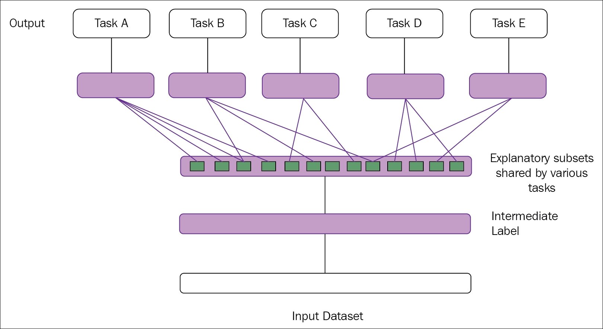
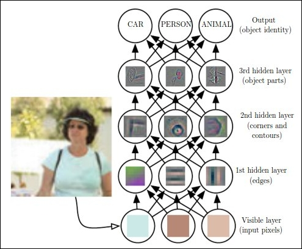
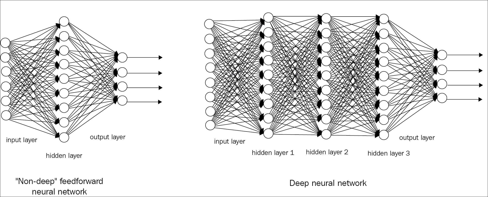
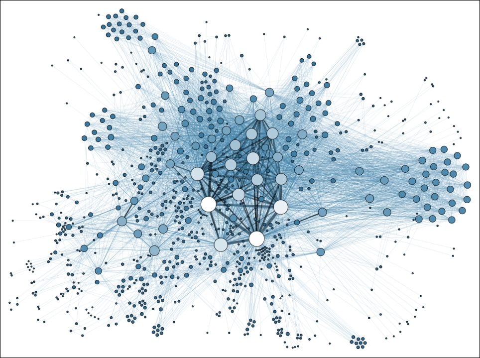
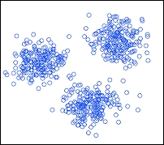
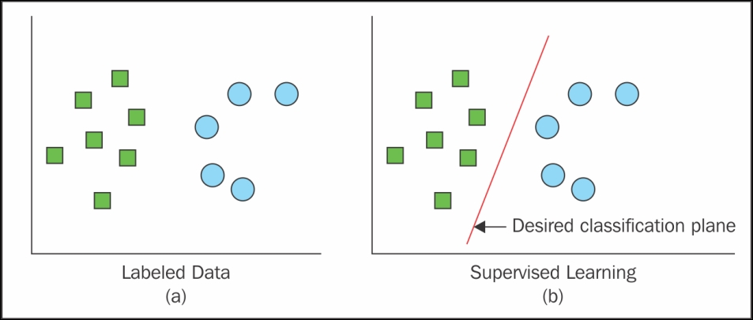
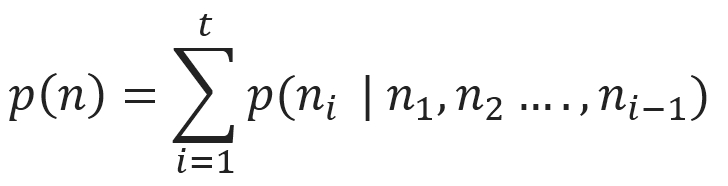
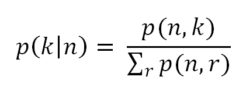
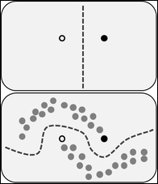

"By far the greatest danger of Artificial Intelligence is that people conclude too early that they understand it." | ||
| --Eliezer Yudkowsky | ||
Ever thought, why it is often difficult to beat the computer in chess, even for the best players of the game? How Facebook is able to recognize your face amid hundreds of millions of photos? How can your mobile phone recognize your voice, and redirect the call to the correct person, from hundreds of contacts listed?
The primary goal of this book is to deal with many of those queries, and to provide detailed solutions to the readers. This book can be used for a wide range of reasons by a variety of readers, however, we wrote the book with two main target audiences in mind. One of the primary target audiences is undergraduate or graduate university students learning about deep learning and Artificial Intelligence; the second group of readers are the software engineers who already have a knowledge of big data, deep learning, and statistical modeling, but want to rapidly gain knowledge of how deep learning can be used for big data and vice versa.
This chapter will mainly try to set a foundation for the readers by providing the basic concepts, terminologies, characteristics, and the major challenges of deep learning. The chapter will also put forward the classification of different deep network algorithms, which have been widely used by researchers over the last decade. The following are the main topics that this chapter will cover:
Ever since the dawn of civilization, people have always dreamt of building artificial machines or robots which can behave and work exactly like human beings. From the Greek mythological characters to the ancient Hindu epics, there are numerous such examples, which clearly suggest people's interest and inclination towards creating and having an artificial life.
During the initial computer generations, people had always wondered if the computer could ever become as intelligent as a human being! Going forward, even in medical science, the need of automated machines has become indispensable and almost unavoidable. With this need and constant research in the same field, Artificial Intelligence (AI) has turned out to be a flourishing technology with various applications in several domains, such as image processing, video processing, and many other diagnosis tools in medical science too.
Although there are many problems that are resolved by AI systems on a daily basis, nobody knows the specific rules for how an AI system is programmed! A few of the intuitive problems are as follows:
Moreover, with the integration of various other fields, for example, probability, linear algebra, statistics, machine learning, deep learning, and so on, AI has already gained a huge amount of popularity in the research field over the course of time.
One of the key reasons for the early success of AI could be that it basically dealt with fundamental problems for which the computer did not require a vast amount of knowledge. For example, in 1997, IBM's Deep Blue chess-playing system was able to defeat the world champion Garry Kasparov [1]. Although this kind of achievement at that time can be considered significant, it was definitely not a burdensome task to train the computer with only the limited number of rules involved in chess! Training a system with a fixed and limited number of rules is termed as hard-coded knowledge of the computer. Many Artificial Intelligence projects have undergone this hard-coded knowledge about the various aspects of the world in many traditional languages. As time progresses, this hard-coded knowledge does not seem to work with systems dealing with huge amounts of data. Moreover, the number of rules that the data was following also kept changing in a frequent manner. Therefore, most of the projects following that system failed to stand up to the height of expectation.
The setbacks faced by this hard-coded knowledge implied that those artificial intelligence systems needed some way of generalizing patterns and rules from the supplied raw data, without the need for external spoon-feeding. The proficiency of a system to do so is termed as machine learning. There are various successful machine learning implementations which we use in our daily life. A few of the most common and important implementations are as follows:
There are many such models which have been implemented with the help of machine learning techniques.
Figure 1.1: The figure shows the example of different types of representation. Let's say we want to train the machine to detect some empty spaces in between the jelly beans. In the image on the right side, we have sparse jelly beans, and it would be easier for the AI system to determine the empty parts. However, in the image on the left side, we have extremely compact jelly beans, and hence, it will be an extremely difficult task for the machine to find the empty spaces. Images sourced from USC-SIPI image database
A large portion of performance of the machine learning systems depends on the data fed to the system. This is called representation of the data. All the information related to the representation is called the feature of the data. For example, if logistic regression is used to detect a brain tumor in a patient, the AI system will not try to diagnose the patient directly! Rather, the concerned doctor will provide the necessary input to the systems according to the common symptoms of that patient. The AI system will then match those inputs with the already received past inputs which were used to train the system.
Based on the predictive analysis of the system, it will provide its decision regarding the disease. Although logistic regression can learn and decide based on the features given, it cannot influence or modify the way features are defined. Logistic regression is a type of regression model where the dependent variable has a limited number of possible values based on the independent variable, unlike linear regression. So, for example, if that model was provided with a caesarean patient's report instead of the brain tumor patient's report, it would surely fail to predict the correct outcome, as the given features would never match with the trained data.
These dependencies of the machine learning systems on the representation of the data are not really unknown to us! In fact, most of our computer theory performs better based on how the data are represented. For example, the quality of a database is considered based on how the schema is designed. The execution of any database query, even on a thousand or a million lines of data, becomes extremely fast if the table is indexed properly. Therefore, the dependency of the data representation of the AI systems should not surprise us.
There are many such examples in daily life too, where the representation of the data decides our efficiency. To locate a person amidst 20 people is obviously easier than to locate the same person in a crowd of 500 people. A visual representation of two different types of data representation is shown in the preceding Figure 1.1.
Therefore, if the AI systems are fed with the appropriate featured data, even the hardest problems could be resolved. However, collecting and feeding the desired data in the correct way to the system has been a serious impediment for the computer programmer.
There can be numerous real-time scenarios where extracting the features could be a cumbersome task. Therefore, the way the data are represented decides the prime factors in the intelligence of the system.
Finding cats amidst a group of humans and cats can be extremely complicated if the features are not appropriate. We know that cats have tails; therefore, we might like to detect the presence of tails as a prominent feature. However, given the different tail shapes and sizes, it is often difficult to describe exactly how a tail will look like in terms of pixel values! Moreover, tails could sometimes be confused with the hands of humans. Also, overlapping of some objects could omit the presence of a cat's tail, making the image even more complicated.
From all the above discussions, it can be concluded that the success of AI systems depends mainly on how the data are represented. Also, various representations can ensnare and cache the different explanatory factors of all the disparities behind the data.
Representation learning is one of the most popular and widely practiced learning approaches used to cope with these specific problems. Learning the representations of the next layer from the existing representation of data can be defined as representation learning. Ideally, all representation learning algorithms have this advantage of learning representations, which capture the underlying factors, a subset that might be applicable for each particular sub-task. A simple illustration is given in the following Figure 1.2:

Figure 1.2: The figure illustrates representation learning. The middle layers are able to discover the explanatory factors (hidden layers, in blue rectangular boxes). Some of the factors explain each task's target, whereas some explain the inputs
However, dealing with extracting some high-level data and features from a massive amount of raw data, which requires some sort of human-level understanding, has shown its limitations. There can be many such examples:
In all these preceding edge cases, representation learning does not appear to behave exceptionally, and shows deterrent behavior.
Deep learning, a sub-field of machine learning, can rectify this major problem of representation learning by building multiple levels of representations or learning a hierarchy of features from a series of other simple representations and features [2] [8].

Figure 1.3: The figure shows how a deep learning system can represent the human image by identifying various combinations such as corners and contours, which can be defined in terms of edges. Image reprinted with permission from Ian Goodfellow, Yoshua Bengio, and Aaron Courville, Deep Learning, published by The MIT Press
The preceding Figure 1.3 shows an illustration of a deep learning model. It is generally a cumbersome task for the computer to decode the meaning of raw unstructured input data, as represented by this image, as a collection of different pixel values. A mapping function, which will convert the group of pixels to identify the image, is ideally difficult to achieve. Also, to directly train the computer for these kinds of mapping is almost insuperable. For these types of tasks, deep learning resolves the difficulty by creating a series of subsets of mappings to reach the desired output. Each subset of mappings corresponds to a different set of layer of the model. The input contains the variables that one can observe, and hence , are represented in the visible layers. From the given input we can incrementally extract the abstract features of the data. As these values are not available or visible in the given data, these layers are termed as hidden layers.
In the image, from the first layer of data, the edges can easily be identified just by a comparative study of the neighboring pixels. The second hidden layer can distinguish the corners and contours from the first hidden layer's description of the edges. From this second hidden layer, which describes the corners and contours, the third hidden layer can identify the different parts of the specific objects. Ultimately, the different objects present in the image can be distinctly detected from the third layer.
Deep learning started its journey exclusively in 2006, Hinton et al. in 2006[2]; also Bengio et al. in 2007[3] initially focused on the MNIST digit classification problem. In the last few years, deep learning has seen major transitions from digits to object recognition in natural images. Apart from this, one of the major breakthroughs was achieved by Krizhevsky et al. in 2012 [4] using the ImageNet dataset.
The scope of this book is mainly limited to deep learning, so before diving into it directly, the necessary definitions of deep learning should be discussed.
Many researchers have defined deep learning in many ways, and hence, in the last 10 years, it has gone through many definitions too! The following are few of the widely accepted definitions:
As the definitions suggest, deep learning can also be considered as a special type of machine learning. Deep learning has achieved immense popularity in the field of data science with its ability to learn complex representation from various simple features. To have an in-depth grip on deep learning, we have listed out a few terminologies which will be frequently used in the upcoming chapters. The next topic of this chapter will help you to lay a foundation for deep learning by providing various terminologies and important networks used for deep learning.
To understand the journey of deep learning in this book, one must know all the terminologies and basic concepts of machine learning. However, if you already have enough insight into machine learning and related terms, you should feel free to ignore this section and jump to the next topic of this chapter. Readers who are enthusiastic about data science, and want to learn machine learning thoroughly, can follow Machine Learning by Tom M. Mitchell (1997) [5] and Machine Learning: a Probabilistic Perspective (2012) [6].
Neural networks can be recurrent as well as feed-forward. Feed-forward networks do not have any loop associated in their graph, and are arranged in a set of layers. A network with many layers is said to be a deep network. In simple words, any neural network with two or more layers (hidden) is defined as a deep feed-forward network or feed-forward neural network. Figure 1.4 shows a generic representation of a deep feed-forward neural network.
Deep feed-forward networks work on the principle that with an increase in depth, the network can also execute more sequential instructions. Instructions in sequence can offer great power, as these instructions can point to the earlier instruction.
The aim of a feed-forward network is to generalize some function f. For example, classifier y=f(x) maps from input x to category y. A deep feed-forward network modified the mapping, y=f(x; α), and learns the value of the parameter α, which gives the most appropriate value of the function. The following Figure 1.4 shows a simple representation of the deep-forward network, to provide the architectural difference with the traditional neural network.

Figure 1.4: Figure shows the representation of a shallow and deep feed-forward network
Datasets are considered to be the building blocks of a learning process. A dataset can be defined as a collection of interrelated sets of data, which is comprised of separate entities, but which can be used as a single entity depending on the use-case. The individual data elements of a dataset are called data points.
The following Figure 1.5 gives the visual representation of the various data points collected from a social network analysis:

Figure 1.5: Image shows the scattered data points of social network analysis. Image sourced from Wikipedia
From the top-level understanding, machine learning techniques can be classified as supervised and unsupervised learning, based on how their learning process is carried out.
In unsupervised learning algorithms, there is no desired output from the given input datasets. The system learns meaningful properties and features from its experience during the analysis of the dataset. In deep learning, the system generally tries to learn from the whole probability distribution of the data points. There are various types of unsupervised learning algorithms, which perform clustering. To explain in simple words, clustering means separating the data points among clusters of similar types of data. However, with this type of learning, there is no feedback based on the final output, that is, there won't be any teacher to correct you! Figure 1.6 shows a basic overview of unsupervised clustering:

Figure 1.6: Figures shows a simple representation of unsupervised clustering
A real life example of an unsupervised clustering algorithm is Google News. When we open a topic under Google News, it shows us a number of hyper-links redirecting to several pages. Each of these topics can be considered as a cluster of hyper-links that point to independent links.
In supervised learning, unlike unsupervised learning, there is an expected output associated with every step of the experience. The system is given a dataset, and it already knows how the desired output will look, along with the correct relationship between the input and output of every associated layer. This type of learning is often used for classification problems.
The following visual representation is given in Figure 1.7:

Figure 1.7: Figure shows the classification of data based on supervised learning
Real-life examples of supervised learning include face detection, face recognition, and so on.
Although supervised and unsupervised learning look like different identities, they are often connected to each other by various means. Hence, the fine line between these two learnings is often hazy to the student fraternity.
The preceding statement can be formulated with the following mathematical expression:
The general product rule of probability states that for an n number of datasets n ε ℝt,the joint distribution can be fragmented as follows:

The distribution signifies that the appeared unsupervised problem can be resolved by t number of supervised problems. Apart from this, the conditional probability of p (k | n), which is a supervised problem, can be solved using unsupervised learning algorithms to experience the joint distribution of p (n, k).

Although these two types are not completely separate identities, they often help to classify the machine learning and deep learning algorithms based on the operations performed. In generic terms, cluster formation, identifying the density of a population based on similarity, and so on are termed as unsupervised learning, whereas structured formatted output, regression, classification, and so on are recognized as supervised learning.
As the name suggests, in this type of learning both labelled and unlabeled data are used during the training. It's a class of supervised learning which uses a vast amount of unlabeled data during training.
For example, semi-supervised learning is used in a Deep belief network (explained later), a type of deep network where some layers learn the structure of the data (unsupervised), whereas one layer learns how to classify the data (supervised learning).
In semi-supervised learning, unlabeled data from p (n) and labelled data from p (n, k) are used to predict the probability of k, given the probability of n, or p (k | n).

Figure 1.8: Figure shows the impact of a large amount of unlabelled data during the semi-supervised learning technique. Figure obtained from Wikipedia
In the preceding Figure 1.8, at the top it shows the decision boundary that the model uses after distinguishing the white and black circles. The figure at the bottom displays another decision boundary, which the model embraces. In that dataset, in addition to two different categories of circles, a collection of unlabeled data (grey circle) is also annexed. This type of training can be viewed as creating the cluster, and then marking those with the labelled data, which moves the decision boundary away from the high-density data region.
The preceding Figure 1.8 depicts the illustration of semi-supervised learning. You can refer to Chapelle et al.'s book [7] to know more about semi-supervised learning methods.
So, as you have already got a foundation in what Artificial Intelligence, machine learning, and representation learning are, we can now move our entire focus to elaborate on deep learning with further description.
From the previously mentioned definitions of deep learning, two major characteristics of deep learning can be pointed out, as follows: